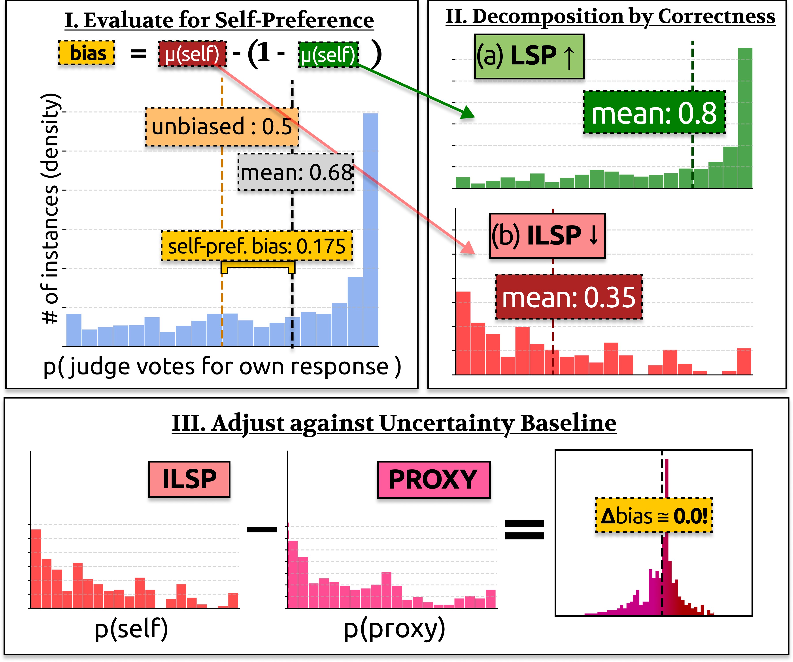
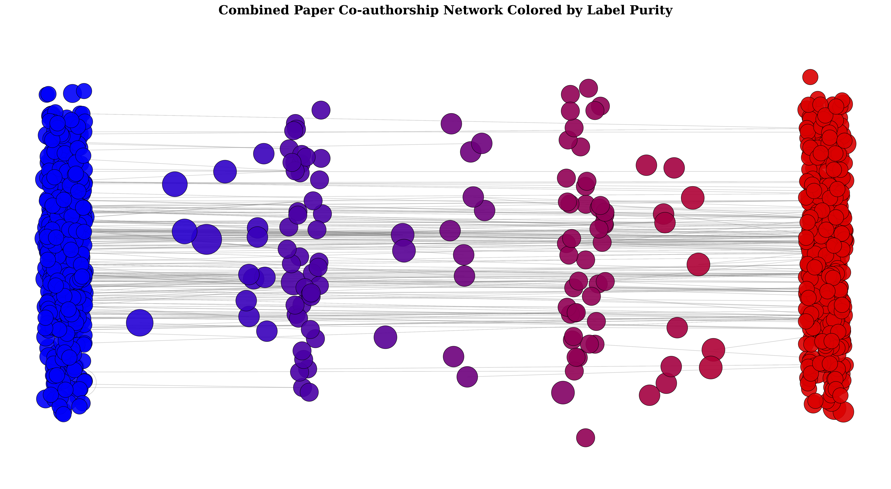
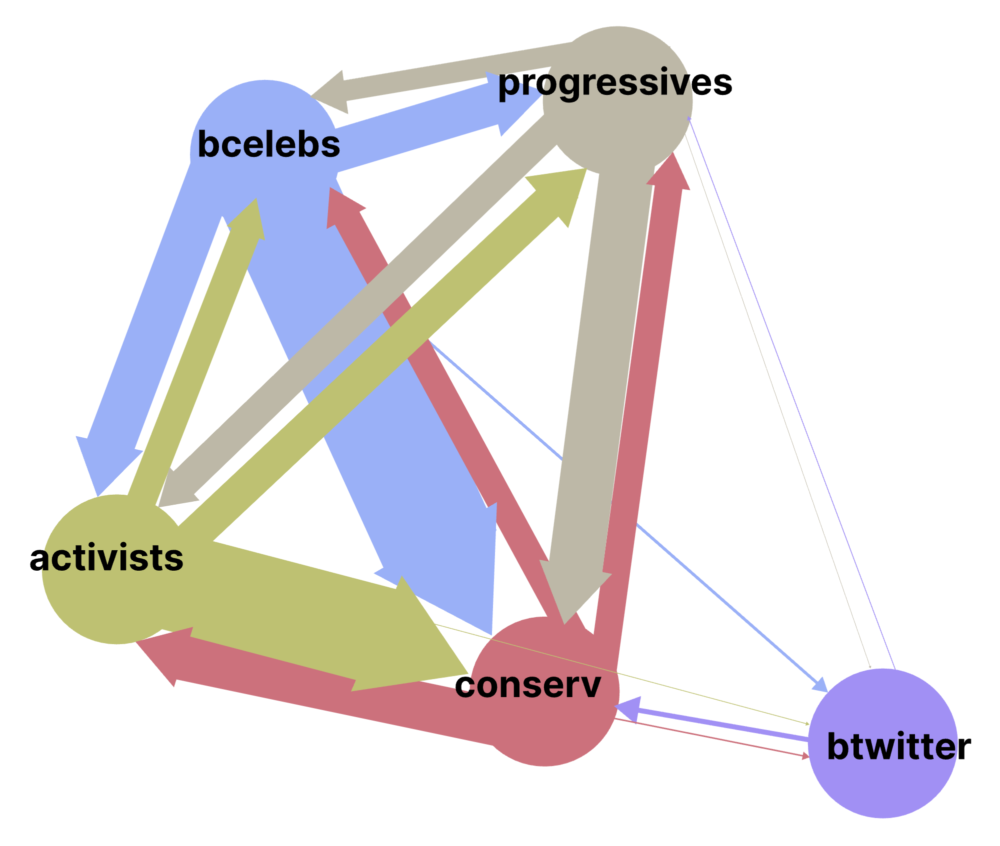

Publications
* denotes equal contribution

Are LLM Evaluators Really Narcissists? Sanity Checking Self-Preference Evaluations
Forty-Third International Conference on Machine Learning, 2026
Measuring Weak-to-Strong Legibility of Reasoning Models
ICML 2026 Workshop on AI for Good (AI4GOOD), 2026

Mind the Gap: Pathways Towards Unifying AI Safety and Ethics Research
Proceedings of the International Association for Safe and Ethical AI, 2026

Words and Action: Modeling Linguistic Leadership in # BlackLivesMatter Communities
Proceedings of the International AAAI Conference on Web and Social Media, 2025
Breaking the Mirror: Activation-Based Mitigation of Self-Preference in LLM Evaluators
Mechanistic Interpretability Workshop at NeurIPS 2025, 2025
Also at: NeurIPS 2025 Workshop on Evaluating the Evolving LLM Lifecycle; NeurIPS 2025 Workshop on Reliable ML from Unreliable Data
Generative Argument Mining: Pretrained Language Models are Argumentative Text Parsers
Undergraduate Thesis, Emory University, 2025